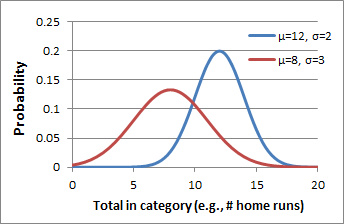

Explanation of New Roto Standings
Introduced in Season 9 (2016)
The new roto standings estimate a team's odds of winning a particular category against a random opponent. The mean and standard deviation of teams' weekly totals are used to estimate a probability distribution for each team. These distributions are compared to calculate the probability that a randomly selected point from one distribution is greater than a random point from another.
To illustrate, the following graph displays probability curves for two fictional teams. The blue team has a mean of 12 and standard deviation of 2, while the red team has a mean of 8 and standard deviation of 3. To compute the blue team's roto score, we calculate the probability that a random point taken from the blue curve is greater than a random point from the red curve.
Scores are calculated using the formula derived below:
Say we have two teams, (a) and (b), with corresponding probability distributions in a given category.
We are interested in P(xa>xb) = P(xa-xb>0), where x is a point selected randomly from the indicated distribution.
Assume both distributions are normal and independent. The difference between a random point from the first and a random point from the second, xD=xa-xb , will also be normally distributed, with the following properties:
- The mean is the difference between the two teams' means: μD=μa-μb
- The variance is pooled: σD2=σa2+σb2 , and therefore the standard deviation σD=√(σa2+σb2)
Define the z-score for a given value of x as the number of standard deviations from the mean: zD=(xD-μD)/σD
When xa-xb=0, xD=0 and zD = (0-μD)/σD = -(μa-μb)/√(σa2+σb2)
Then P(xa-xb>0) = Φ(zD) = Φ((μb-μa)/√(σa2+σb2)), where Φ is the integral of the standard normal distribution from z to ∞.
Calculate P against all opposing teams and average the resulting probabilities to estimate the odds of winning the category against a random opponent. This is the roto score for team (a).
Note: When a category is inversely scored (e.g., a lower ERA is better), the roto score is 1-P.
The final equation is: P(xown > xopponent) = Avgi{ Φ((μi - μown) / √(σi2 + σown2)) } where i is an index of the set of all opposing teams, and Avg is an operator meaning "average of the following set."